Illustration On How The Model Performs
When user inputs a cat face image, the model will encode it into 32 dimensional feature vector. This vector is then compared with each one stored in the database to decide whether the cat in the input image is similar enough to be one of the cat that is recorded in the database.
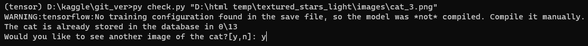
If the model decides that the cat in the input image is one of the cats stored in the database, it will returns the location of the image folder of the cat
| Cats with images stored in the Databse | |
|---|---|
| Input Image | Output Image |
| 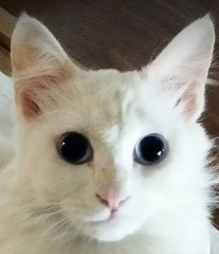 | 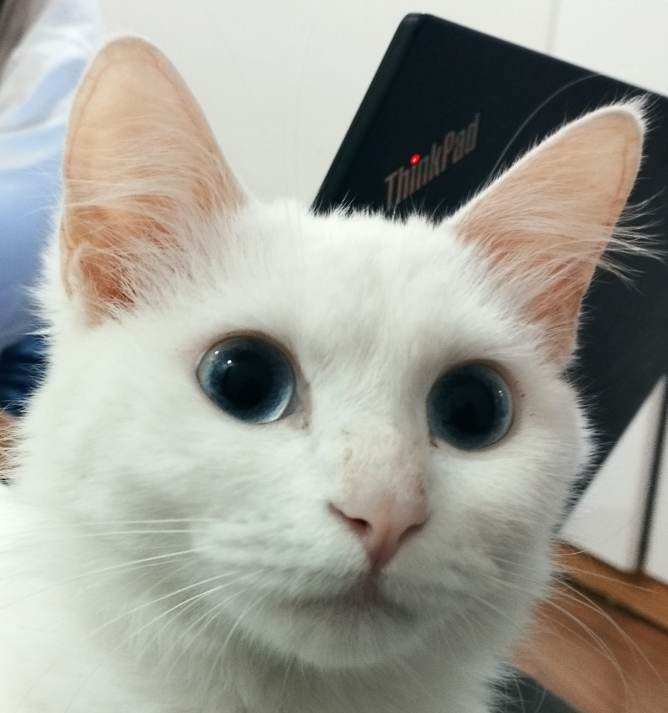 |
| 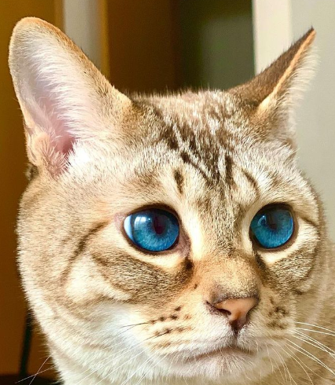 | 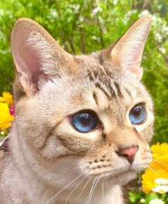 |
| 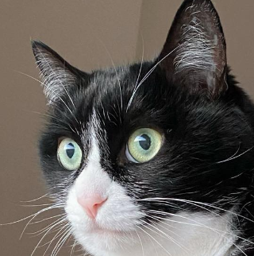 | 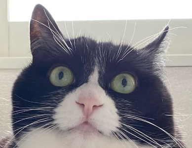 |
If the model decides that the cat in the input image is not one of the cats stored in the database, it will returns the image of the cat in the database that is most similar
| Cats with images not stored in the Databse | |
|---|---|
| Input Image | Output Image |
| 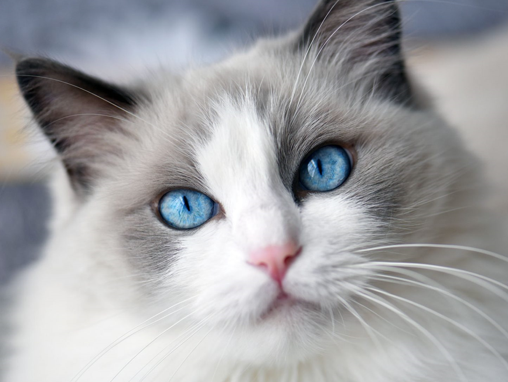 | |
| 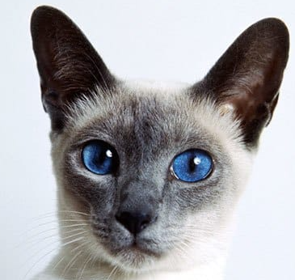 | 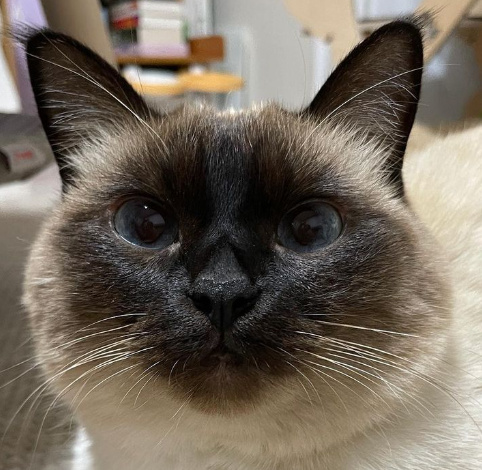 |
| 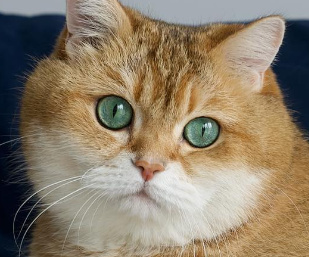 | |